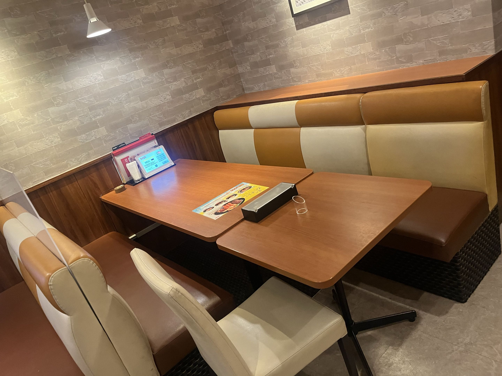

00 · How to use
このページの使い方
ここは評価者向けの口頭説明の骨格です。時系列で「なぜこの形になったか」を話し、 仕組みの細部や点数表は他ページに任せます。
起動手順・現行バグ一覧・評価時の画面操作フローは書きません。 デモ操作は #259 側です。
01 · Prologue
プロローグ — なぜ3Dレイキャスティングゲームを作るプロジェクトになったか
「cub3D をゲーム化する」ことがきっかけですが、そもそも samatsum には、Unity などでのゲーム制作や、 シミュレーターを動かす側への関心が先にありました。
具体的な接点として、 2025年11月29日〜2026年2月15日の 自動運転ミニカーバトルでは、 samatsum・torinoue・tvaroux の3人が同じチームで参加しました。 自動運転の学習をおこなうためのシミュレーターの作成はsamatsumが担当しました。
レイキャスティングに関する技術的な導線は別にあります。当時 samatsum は選択課題として miniRT を2025年6月8日にクリアしており、 torinoue が2025年10月10日に着手した cub3D について、 レイキャスティングの高速化を助言していました。 助言を続けるうちに cub3D 自体へ関心が移り、 samatsum 自身もエンジンを伸ばし始め、 2026年6月上旬には（のちの本課題にあたる）FPS の原型を完成させていました。 このエンジンを壊さず土台にしてプロジェクトへ伸ばした、というのが出発点です。 samatsum の BH 入りなどの経緯はここでは扱いません。
02 · cub3D
出発点 — cub3D（技術的に何を引き継いだか）
技術的に引き継いだ核は次です。C のレイキャスティング、マップ資産（maps/ と
.cub）、そして MiniLibX 上で動くネイティブ実行という開発の足場。
cub3D への関心から始めたからこそ、捨てて作り直すのではなく、 壊さず拡張するという選択になりました。 ファイル単位の解説は エンジン構成・ ビルドと実行へ。
03 · Going web
転機 — 「ブラウザで対戦する」決定
ネイティブの FPS 原型を、評価しやすいブラウザ上のオンライン対戦へ広げる判断をしたのが転機です。 複数人が同時に触る以上、勝敗や位置の正しさはクライアントに置けません。
そこで採ったのがサーバ権威です。サーバ上の
sim.wasm が試合状態の正本を計算し、ブラウザは受け取った snapshot を描くだけにする。
「なぜそうするか」の説明は
サーバ権威モデルへ。
WASM の組み立て手順やプロトコル詳細はこのページでは書きません。
04 · Solo period
単独稼働期 — 骨格ができた時期
チームキックオフ（2026-08-08）より前の単独稼働期に、いまも残る骨格が置かれました。
C エンジン本体は codes/、ブラウザ／WASM 向けの橋渡しは web/。
同じソースから native・render.wasm・sim.wasm
の3ターゲットへ出す形です。
プロローグの関心（レイキャストで動く世界を壊さず伸ばす）が、この3ターゲット選択に現れています。 誰が何を持つかの現行表は チーム体制へ。日次進捗や個人の感情談は書きません。
05 · Kickoff
キックオフ — チームが動き始めた
2026-08-08 にチーム運用が始まりました。単独稼働で置いた骨格を、 複数人で並行して伸ばす段階です。

ここで入れたのがレーン分割です。実行場所ではなく、 「どのコードを誰が保守するか」で境界を切る （Engine / Backend / Infra / Frontend / GameView）。 同じ C ソースが native と wasm の両方に載る以上、実行場所で分けると担当が割れない、 というのが意図でした。当時はレーン付き Issue やレーン別の Project で進めていました。 現行メンバー表の複製はせず、 チーム体制へリンクします。
06 · Roles
役割の定着 — PO / PM / TL / Dev
2026-08-23 前後に、課題書が求める管理役割（PO / PM / テクニカルリード / 開発者）の割当が発効しました。 誰がどの役割か、提出メンバーとサポーターの区別は チーム体制が正本です。
キックオフ直後はsamatsumが設定したレーンを軸に進めていましたが、課題書で求められる役割配置を決めたのちに
PO / PM / TL を中心に体制を組み直し、現行の進め方へ移りました。
2026-08-30（Issue
#141）では、
レーン別の人員表をやめ、GitHub Projects も単一の "all" へ統合しています。
レーン（lane:*）は Issue の領域ラベルとしてだけ残し、
日常の優先度や統合は役割と PR（origin/main への CI ゲート）が担います。
詳細は チーム体制 §03・
Git運用フロー §05へ。
離脱・合流の経緯はここでは書きません。
samatsum はエンジン起源としてプロローグと単独稼働期で触れ済みとし、
この節では役割定着が進め方をどう変えたかだけに留めます。
07 · Today
いまの形 — オンライン対戦プラットフォームへ
（本文は後続コミットで書く）
09 · References
参照
（リンク一覧は後続コミットで書く）